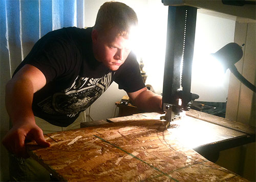

About Me
As mentioned, my name is Tyler Will and I have an education and professional background in Fine Woodworking. I hope you find my experience interesting and worthy of helping you with your next project!
Throughout my younger years, I was fascinated with building things and figuring out how things were assembled. I would watch my uncle build book shelves and small projects for family, and it was amazing to me to see him make parts and pieces and then watch him put them together into a functional form. Years later, I took shop class in high school where I began learning how to use the tools safely and create the parts and pieces to assemble various projects. I built small projects such as a mantle clock, a book shelf and a few other basic projects.
I furthered my education of the trade by attending the University of Rio Grande where I earned a Bachelors Degree in Industrial Technology with a focus on Woodworking. While at Rio, I learned the fundamentals of woodworking in furniture design, construction methods, and finishing techniques. Some of the projects I built include an 18th Century Secretary Desk with goose neck molding, hundreds of dovetails, raised panel doors, ogee bracket feet and much more. I also built a Virginia corner cabinet with antique glass in the doors and a large amount of applied molding. Other projects at Rio included a Shaker night stand, a Philadelphia Lowboy, a tall-case clock, and a spice box, just to name a few. Most of these projects are featured in the gallery section of the website.
My intentions were to become a high school shop teacher, a position that soon became non-existent as it has been removed from high school curriculums across the nation. I searched for other jobs in education and was unsuccessful. So, after graduating I moved to Columbus, Ohio where I found employment with Woodcraft. It was a great way into the business, but after some time a friend from college asked me to join him at a woodworking shop in New Mexico. So, I hopped on a plane and worked for Santa Fe Door Store. I had a blast out while working with them where we built high-end interior and exterior doors as well as an occasional gate or some other custom project. I have returned home to Ohio and took a break from woodworking for a few years professionally, but, in 2015, I re-established my work with Woodcraft in Columbus, Ohio.
Being back at Woodcraft has allowed me to get back in a professional shop and start producing some great work once again. In addition to selling and discussing tools and supplies for woodworking, I have managed to find a piece of the teaching career I was hopeful to pursue as I conduct various workshops for fellow woodworkers at the Woodcraft store. Some of the classes I teach are: Bandsaw Basics, Rough to Ready, Shaping a Cabriole Leg. To see a list of my upcoming classes, visit the Columbus, Ohio Woodcraft website. I hope to see you in class!